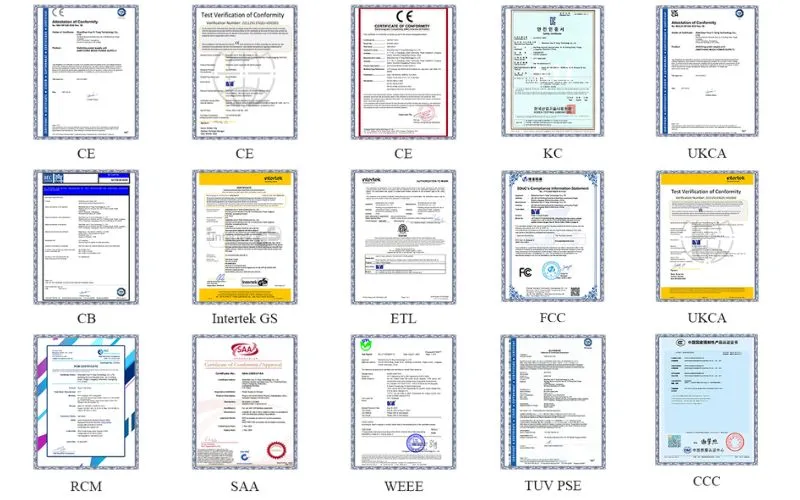
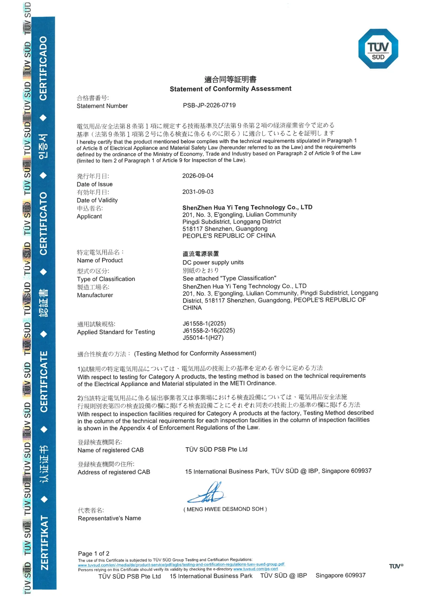

采购与合规核心结论：根据日本《电气用品安全法（DENAN）》规定，所有出口至日本市场的独立外置 AC/DC 电源适配器及充电器，在法律性质上均属于法定高风险的“直流电源装置”，必须强制取得由日本经济产业省（METI）注册合格评定机构（如 JET、JQA、TÜV、CQC）签发的菱形 PSE（〈PS〉E）适规性证明书，并完成严格的工厂现场审查。外置电源适配器绝对禁止使用仅凭自我宣称的圆形 PSE（◯PS◯E）！此外，产品必须配备符合 JIS C 8303 标准的耐漏电起痕绝缘插脚（耐トラッキング性试验），且实物铭牌必须依法完整标注菱形 PSE 标志、发证机构代码、日本本土进口商（届出事業者）法定全称及规格参数，方可在日本海关合法通关并在亚马逊日本站（Amazon JP）及乐天（Rakuten）合规销售。
日本是全球对电子电气产品品质与安全性要求最挑剔的市场之一。在跨境电商（亚马逊日本站、Yahoo! 购物、乐天）以及传统 B2B 外贸中，大量出口企业由于对日本电气法律缺乏认知，听信不法中间商的误导，给外置电源打上低成本的“圆形 PSE”，导致货物在日本海关（税関）被整柜就地查扣、强制退运，甚至使日本买家面临高额罚款与行政刑事处分。
为了帮助跨境品牌商、外贸业务团队以及硬件采购经理精准避坑，拥有 18 年电源出口制造经验的深圳市华亿腾科技开发有限公司（HYT）技术团队，特别整理了这份出口日本电源适配器 PSE 认证全景采购指南。
一、日本 DENAN 法规机制：菱形 PSE 与圆形 PSE 的本质区别
日本规范电气产品安全的根本大法是《电气用品安全法》（Electrical Appliance and Material Safety Law，简称 DENAN 法），其主管机构为日本经济产业省（METI）。DENAN 法根据产品的火灾、触电危害风险等级，将受控电气用品严格划分为两大类别：
1. 菱形 PSE（特定电气用品 - 特別特定電気用品，Category A）
“特定电气用品”共包含 116 种结构复杂、直接连接高压电网、容易因短路或过热造成严重人身伤害或群发性火灾的高危险器具。“直流电源装置（DC Power Supply Units）”——即所有外置插墙式与桌面式 AC/DC 电源适配器、锂电池充电器——在法律中被明确指定为特定电气用品。
菱形 PSE 采用三位一体的极严格管控闭环：
- 法定第三方型式试验：必须送样至 METI 注册的具有资质的合格评定机构（Registered CAB，例如日本本土的 JET、JQA，或国际知名的 TÜV Rheinland、中国 CQC），按照日本技术基准省令（J62368-1 或 J61558 体系）执行极其苛刻的破坏性测试。
- 工厂现场审查（Factory Audit）：认证机构的审核员必须亲自进入制造工厂车间，对测试仪表（耐压测试仪、绝缘电阻仪、接地电阻仪）、生产流水线校准记录、作业指导书及质量管理体系进行实地验厂，确认具备批量一致性生产能力。
- 官方适规性证明书（適合証明書）：验厂与型式试验双合格后，机构向制造商签发有效期为 3 年（或 5 年）的正式证明书。
2. 圆形 PSE（非特定电气用品 - 特定電気用品以外の電気用品，Category B）
“非特定电气用品”涵盖 341 种结构相对简单、危险系数较低的电气产品，例如 LED 灯泡、电风扇、电卷发器、小家电以及整机设备内部的内置电源板。
圆形 PSE 不强制要求第三方机构发证，也不强制要求验厂。日本法律允许制造厂商在具备充分测试数据的前提下进行“自我确认（自己確認）”，由日本本土进口商保存合规技术文件，并在铭牌上标注圆形 PSE 标志。
重大合规警告：外置独立电源适配器绝非 Category B 产品！部分不良贸易商以“圆形 PSE 便宜快速”为由忽悠买家，这属于严重的走私欺诈行为。日本警察厅与 METI 每年均开展市场突击搜查，一旦查获销售带有圆形 PSE 的外置适配器，将处以最高 1 年以下有期徒刑或对法人处以最高 1 亿日元（约合数百万元人民币）的巨额罚金。
二、核心参数对比表：菱形 PSE vs. 圆形 PSE
为了使供应链团队一目了然，以下为两者的法定核心维度对比表：
| 对比维度 | 菱形 PSE（〈PS〉E - 特定电气用品） | 圆形 PSE（◯PS◯E - 非特定电气用品） |
|---|---|---|
| 法律监管类别 | 特别特定电气用品（Category A，共 116 种高危器具）。 | 非特定电气用品（Category B，共 341 种低危器具）。 |
| 电源适配器适用性 | 所有外置独立 AC/DC 电源适配器、充电器强制执行。 | 外置独立电源绝对禁止使用！仅适用于内部集成电源板或小家电整机。 |
| 型式试验机构要求 | 必须由 METI 注册认定的第三方机构（JET/JQA/TÜV/CQC）出具测试报告。 | 允许企业自检或委托非官方普通实验室测试，实行自我符合性声明。 |
| 制造工厂审厂要求 | 必须执行现场验厂审查，核查关键测试仪器校验记录与生产追溯能力。 | 无审厂要求。 |
| 适规性证书效力 | 由发证机构正式颁发《適合証明書》，法律有效期通常为 3 年（最长 5 年）。 | 无官方机构颁发证书，企业自备技术文件（Doc）。 |
| 铭牌法定要素 | 菱形 PSE 图标 + 认证机构代号/名称 + 日本届出事業者名称 + 额定参数。 | 圆形 PSE 图标 + 日本届出事業者名称 + 额定参数（严禁出现认证机构名称）。 |
| 违法惩罚措施 | 海关立即扣货退运、全日本召回、最高 1 亿日元罚金并追究刑事责任。 | 行政指导、勒令下架停售、责令整改及罚款。 |
三、出口日本市场的严苛专属技术门槛
日本由于其特有的 100V 岛国电网环境（关东 50Hz / 关西 60Hz 混用）以及海洋性高湿度气候，其安规对机械结构与电磁兼容有极具特色的强制要求：
1. 插头耐漏电起痕绝缘套管（耐トラッキング性）
日本家庭与办公室长期处于高湿度环境，插头长期插入墙壁插座时，两极金属插脚与插座缝隙极易积聚微小灰尘并吸收水汽，形成导电微通道引起微小电弧闪烁，最终碳化起火（即“漏电起痕火灾”）。
为此，日本技术基准省令（JIS C 8303 / J60884-1）强制要求：所有插墙式电源适配器的交流金属插片根部，必须采用耐跟踪漏电起痕测试（PTI ≥ 100 或 400）的阻燃绝缘工程塑料（如改性 PBT/PA）进行精密包覆注塑，绝缘护套长度必须严格控制在标准公差内。华亿腾全系日本规格插墙式电源均开模定制了标准绝缘套管插头，杜绝起痕起火隐患。
2. JIS C 8303 插脚尺寸与固定式耐电痕插头结构
日规插头表面看起来与美规平行插头相似，但日规插脚的两极宽度均等（均为 6.3mm ± 0.2mm，厚度 1.5mm，带有 ø3.0mm 定位圆孔），无美规单边加宽的极性片。华亿腾全系日规插墙式电源采用符合 JIS C 8303 标准的耐电痕绝缘护套固定式日规插脚（Fixed Japanese Type A Prongs）及桌面式电源结构，插脚基座与外壳结合牢固，外壳采用阻燃防火 UL94-V0 级环保工程原料，经受严苛的机械插拔力与跌落冲击测试无松脱破损，为高端消费品与工业设备外销日本提供坚实品质支撑。
3. J55032 电磁干扰控制（EMC）
适配器必须满足日本针对多媒体设备无线电骚扰特性的 J55032 标准。在高频开关变压器设计中，必须兼顾关东 100V 50Hz 与关西 100V 60Hz 的双重电网工况，传导骚扰与空间辐射杂音端子电压均必须留出至少 6dB 的安全工程裕量。
4. 铭牌四要素合规标注（日本经济产业省 METI 监管核心）
日本海关和 METI 在市场上检查外置电源时，首先核查铭牌是否包含法定 4 大要素（四者缺一不可）：
- 要素 1：菱形 PSE 图标：清晰标准的 〈PS〉E 几何图案。
- 要素 2：认证评定机构名称：必须紧邻菱形标志印刷经认定的第三方发证机构标识（如 "JET"、"TÜV" 或 "CQC"）。
- 要素 3：日本届出事業者法定名称：在 METI 依法完成输入届出备案的日本本土法人企业全称（例如 "株式会社〇〇"）。
- 要素 4：完整电气技术规格：额定输入（AC 100-240V 50/60Hz）、额定输出电压电流、精确型号及极性标识。
四、出口日本电源适配器采购 5 步核验清单
采购团队在向供应商下达日本订单前，建议严格执行以下 5 步核验闭环：
- 第一步：索取机构适规性证明书原件（適合証明書）：确认证书上的“直流电源装置”型式区分表（Form Factor）、功率范围、输出电压规格涵盖所采购的型号，且证书在有效存续期内。
- 第二步：明确日本本地 METI 届出事業者：确认日本买家或清关代理已向关东/近畿等经济产业局递交《电气用品输入事业届出书》，取得官方回执章备查。
- 第三步：实物检验插脚绝缘套管工艺：检查实物插脚基座塑料注塑是否紧致密实、无毛刺破损，是否通过灼热丝及耐漏电起痕 PTI 测试。
- 第四步：审查工厂日常出厂三项安规测试：根据 DENAN 法第 8 条，确认制造工厂对每台出厂电源均实施 100% 的：(1) 绝缘电阻测试、(2) 介质耐压测试（Hi-pot 3000V AC）、(3) 通电性能检验，并保存至少 3 年的检验台账。
- 第五步：铭牌菲林工程图提前双向确认：在批量注塑开模或丝印前，将铭牌设计稿提交日本进口商法务核对日文汉字字体及图标间距，杜绝印刷错误导致的报关延误。
五、为什么日本客户长期信赖华亿腾电源
自 2008 年成立以来，深圳市华亿腾科技开发有限公司（HYT）深耕外贸电源制造，对日本市场严谨细致的“工匠品质”有着深刻的敬畏与体系化执行力：
- 多机构持证的 3W–60W 菱形 PSE 完整资质库：华亿腾拥有覆盖 3W 至 60W 全功率段的完整日本菱形 PSE《適合同等証明書》证书库。合作发证机构涵盖 TÜV SÜD、CQC（中国质量认证中心）等经日本 METI 官方认可的注册检验机构（CAB），以下为部分代表性证书示例：
- 代表示例一（TÜV SÜD PSB 签发，证书号：
PSB-JP-2026-0719）：依据最新日本标准J61558-1(2025)、J61558-2-16(2025)及J55014-1(H27)认证，覆盖直流电源装置及电池充电用途。 - 代表示例二（CQC 中国质量认证中心签发，证书号：
PSE26093431）：依据J62368-1(2023)、J55032(H29)及J3000(H25)标准认证，涵盖HYT-0502100、HYT-1500800、HYT-1200800P等多款主力走量型号。
- 代表示例一（TÜV SÜD PSB 签发，证书号：
- 符合 JIS C 8303 标准的耐电痕绝缘固定插脚：配备耐漏电起痕绝缘护套固定式日规插脚（Fixed Type A）及高防护桌面式外壳，采用阻燃 UL94-V0 级原料精密注塑，根除火灾隐患。
- 全套 METI 报备材料工程协助：华亿腾外贸合规团队可协助海外买家与日本进口商，快速整理包括全套英文/日文测试报告、元器件清单（CDF）、电路原理图、变压器规格书及铭牌工程图在内的 METI 届出所需全案材料。
- 100% 满载高温老化与严苛质保：工厂通过 ISO 9001:2015 国际质量认证，全系产品出厂执行 100% 自动化 ATE 参数检验与 45℃ 满载高温老化筛选，支持全流程批次条码追踪，提供长达 2 年的原厂品质保证。
- 小批量柔性起订（MOQ 100台）：支持 100 台起灵活试单，标准日规样品 3~5 个工作日内即可完成快速出样，协助客户迅速切入日本市场商机。

TÜV SÜD PSB：PSB-JP-2026-0719
J61558-1(2025) / J61558-2-16(2025)

CQC 中国质量认证中心：PSE26093431
J62368-1(2023) / J55032(H29)
关于日本 PSE 认证的常见问题解答
为什么外置独立 AC/DC 电源适配器在日本法律上绝不能使用圆形 PSE？
在日本《电气用品安全法（DENAN）》的法定目录中，外置交流电源适配器与各类插墙式充电器被归类为“直流电源装置（直流電源装置）”，属于法定高危险性的“特别特定电气用品（特定電気用品，Category A）”。由于外置电源直接接入 100V 电网并转化为低压输出，一旦绝缘破坏或短路极易发生群发性火灾和严重电击，因此日本法律强制要求必须由 METI 注册合格评定机构进行第三方型式试验及工厂审查并颁发菱形 PSE 证书。圆形 PSE 仅供低危险性的“非特定电气用品（Category B）”自我声明使用，外置独立电源标注圆形 PSE 属于严重的违法走私行为，海关一旦查获将全数没收，进口企业将面临最高 1 亿日元的刑事巨额罚款。
跨境电商与海外出口商向日本销售电源适配器，如何解决 METI 备案（届出事業者）问题？
根据日本电气用品安全法第 3 条规定，向日本经济产业省（METI）提交《电气用品输入事业届出书》的法律主体，必须是在日本境内具有独立法人资格并合法注册的日本公司（进口商）。中国境内的生产制造工厂无法直接担任 METI 届出事業者。采购商可通过两种合规途径解决：(1) 使用买家在日本当地设立的子公司、分公司或有进口资质的长期合作经销商作为届出人；(2) 委托日本本土具有海关事务事务监督员资质的专业进口代理机构（ACP / Importer of Record）。在产品铭牌上，必须紧邻菱形 PSE 标志与发证机构缩写，清晰印刷合法的日本届出事業者完整公司全称。
华亿腾（HYT）现有的日本 PSE 证书涵盖哪些产品功率段与插脚形态？
华亿腾科技（HYT）拥有覆盖 3W 至 60W 全功率段的完整日本菱形 PSE《適合同等証明書》官方证书库与型式试验报告。产品形态包含：符合 JIS C 8303 标准的耐电痕绝缘护套固定式日规插脚小体积插墙式适配器（Fixed Japanese Type A Prongs）以及桌面式电源，官方合作发证机构包括 TÜV SÜD（证书号 PSB-JP-2026-0719，依据 J61558 标准）与中国质量认证中心 CQC（证书号 PSE26093431，依据 J62368-1 标准，覆盖 HYT-0502100、HYT-1500800 等型号）。全系产品均通过 J55032 电磁兼容测试，工厂执行 100% 满载高温老化筛选与 3000V 耐压检验，支持 2 年原厂质保与全批次扫码追溯。如需了解更多测试细节与采购流程，请参阅我们的中英双语采购问答中心。